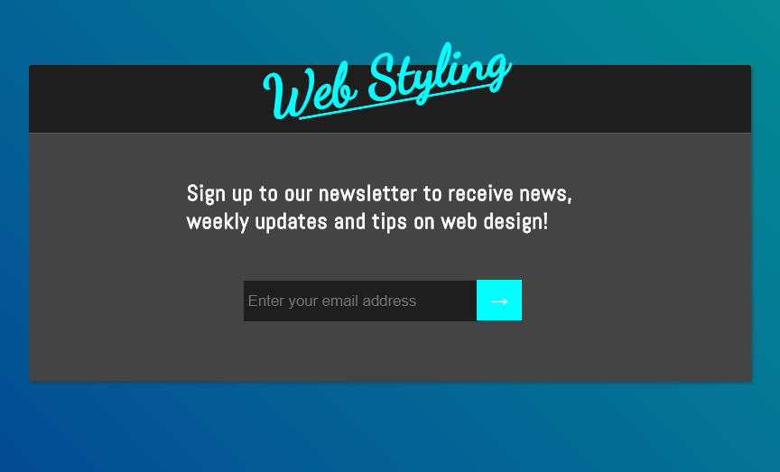

This project was intended to build and design a component which is common for most websites, newsletter sign-up forms. I decided to have my form function as a modal instead of a simple text input field at the bottom of a footer somewhere. The modal would only appear after the user hits a simple newsletter sign-up button. Once the user clicks this button, the form itself becomes the main focus for the user in the browser. This project is currently hosted on Codepen. Thanks Codepen!
I decided to use a blend of various shades of blue and grey because their coolness complement each other very well. The cool tones of blue and grey may bring about a sense of stability and calm for the user. Flat colors are fine, but I used a linear-gradient color design to give the background a polished look that leaves the design feeling complete. Color scheme is just one aspect of a successful brand and it is essential to get it right.
Responsive Web Design doesn't mean that every element has fluid dimensions. Instead, responsive web design is about effectively translating a website's design equally across all sorts of devices and browser sizes. This component or template for newsletter sign-up forms has a fixed height and width which may increase or decrease depending on the current user's viewport and adjusts if the user's viewport exceeds or falls below certain dimensions.